Marcel D. du Plessis1、Sarah-Anne Nicholson2、Isabelle Giddy1、Pedro M. S. Monteiro3、Channing J. Prend4 和 Sebastiaan Swart1,5
Marcel D. du Plessis1, Sarah-Anne Nicholson2, Isabelle Giddy1, Pedro M. S. Monteiro3, Channing J. Prend4 & Sebastiaan Swart1,5
1瑞典哥德堡大学海洋科学系，哥德堡，瑞典。2南非科学与工业研究理事会南大洋碳-气候观测站，开普敦，南非。3南非斯泰伦博斯大学气候研究学院，斯泰伦博斯，南非。4英国爱丁堡大学地球科学学院，爱丁堡，英国。5南非开普敦大学海洋学系，Rondebosch，南非。
1Department of Marine Sciences, University of Gothenburg, Gothenburg, Sweden. 2Southern Ocean Carbon-Climate Observatory, CSIR, Cape Town, South Africa. 3School for Climate Studies, Stellenbosch University, Stellenbosch, South Africa. 4School of GeoSciences, University of Edinburgh, Edinburgh, UK. 5Department of Oceanography, University of Cape Town, Rondebosch, South Africa.
电子邮箱：marcel.du.plessis@gu.se
e-mail: marcel.du.plessis@gu.se
收稿日期：2024年8月6日。接受日期：2025年10月16日。在线发表：2025年12月3日。
Received: 6 August 2024. Accepted: 16 October 2025. Published online: 3 December 2025.
南大洋吸收了气候变化产生的大部分过剩热量。然而气候预估在该海域夏季海表温度上持续偏暖，表明对该区域海气热量交换机制的认识仍有限。本文利用水下与海面机器人现场观测、气候再分析和卫星资料，考察风暴对南大洋夏季表层温度年际变率的影响。结果表明，天气尺度风暴通过改变 mixed-layer 的有效热容量以及自下层夹卷更冷水体来调节夏季 SST。风暴限制到达海表的太阳辐射，从而减少夏季海洋得热。该效应被湍流海气交换导致的热量损失减少部分抵消。我们还发现，南大洋夏季 SST 的年际变化由风暴内平均风速的变化驱动，并与 SAM 相联系。研究结果揭示了风暴强迫与 SST 变率之间的因果联系，这对减小气候模式中的增温偏差、改进未来气候预估至关重要。
The Southern Ocean absorbs most of the excess heat resulting from climate change. However, climate projections show a persistent warm summer bias in its sea surface temperatures, indicating a limited understanding of the air–sea heat exchange mechanisms governing this region. Here we examine the impact of storms on the interannual variability of Southern Ocean surface temperatures during summer using in situ observations from underwater and surface robotic vehicles, climate reanalyses and satellite data. We show that synoptic-scale storms regulate summer sea surface temperatures through alteration of the effective heat capacity of the mixed layer and the entrainment of colder water from below. Storms reduce the summer ocean heat gain by limiting solar radiation reaching the surface. This effect is partially offset by a reduction in heat loss due to turbulent air–sea exchange. We also find that interannual variations in sea surface temperature during summer in the Southern Ocean are driven by changes in storm-mean wind speeds, which are linked to the Southern Annular Mode. Our results demonstrate a causal link between storm forcing and sea surface temperature variability, which is critical for reducing warming biases in climate models and improving future climate projections.
南大洋 SST 变率通过驱动海洋热浪1、改变年海冰范围2,3并设定长期海洋增温与热吸收4,5而影响全球气候。然而在该区域，气候模式预估在南半球夏季存在高达 2.5 °C 的暖偏差，约相当于 SST 季节循环的 100%6。从 CMIP5 到 CMIP6 代模式，这一偏差已增加一倍以上7，原因是若干过程被错误表征或未被解析。已有多种机制被提出来解释该偏差，包括 SAM 对 Ekman 流的调制3,8、海气热通量的错误表征7,9以及大西洋经向翻转环流强度变化10,11。然而，更短时间尺度动力学（如 2–6 天的天气尺度过程）对更长期 SST 变率的作用很少受到关注，原因是难以获得跨季节、时间分辨率达小时、垂直分辨率达米的上层海洋观测。
Sea surface temperature (SST) variability in the Southern Ocean influences global climate by driving marine heatwaves1, altering annual sea-ice extent2,3 and setting long-term ocean warming and heat uptake4,5. Yet, in this region, climate model projections exhibit a warm bias of up to 2.5 °C during austral summer, equivalent to roughly 100% of the seasonal cycle of SST6. This bias has more than doubled from CMIP5 to CMIP6 generation models7 due to a combination of processes either misrepresented or not resolved in the models. Several mechanisms have been proposed to cause this bias, including the modulation of Ekman flow by the Southern Annular Mode (SAM)3,8, misrepresentation of air–sea heat fluxes7,9 and changes in the strength of the Atlantic meridional overturning circulation10,11. However, the role of shorter timescale dynamics, such as synoptic weather (2–6 days), on longer-term SST variability has received little attention due to the difficulty of obtaining upper-ocean measurements at sufficient temporal (hours) and vertical (metres) resolution across the seasons.
在南大洋，天气尺度海气相互作用强烈受到中纬度气旋或风暴影响12,13。风暴对较短时间尺度（小时至天）SST 变率的影响已有充分研究14,15，但其对更长期变化（月至年）的作用仍不清楚。例如，在气候变化背景下风暴预计将增强并向极地移动16,17，这将在年际和年代际尺度上影响中高纬层结动力学与 SST18。这些变化进而会对海洋 CO2 储库、mixed-layer 营养盐供应以及全球能量收支产生深远影响19–22。
In the Southern Ocean, synoptic-scale air–sea interactions are strongly impacted by mid-latitude cyclones or storms12,13. The effect of storms on SST variability at shorter timescales (hours to days) is well studied14,15, however, their impact on longer-term changes (months to years) is yet to be understood. For example, storms are expected to intensify and shift poleward under climate change16,17, which would influence mid- to high-latitude stratification dynamics and SST at interannual and decadal timescales18. These changes, in turn, will have far-reaching consequences for the oceanic CO2 reservoir, mixed-layer nutrient supply and the global energy budget19–22.
本研究考察风暴对南半球夏季（12月至2月，模式 SST 偏差最大的时段6）南大洋 SST 从天气尺度到年际变率的影响。利用海洋机器人现场观测证据，我们表明风暴驱动混合设定了副极地南大洋 SST 的夏季演变。我们将这些局地观测上推至 1981 和 2019 年无冰南大洋，表明夏季 SST 的年际变化直接与风暴内风速相关，而后者由 SAM 驱动。换言之，气候尺度变率对 SST 的调制是通过设定季节增温的天气尺度过程实现的。
This study examines the impact of storms on the synoptic to interannual variability of Southern Ocean SST during the austral summer period (December to February), when model SST biases are largest6. Using in situ observational evidence from ocean robotics, we show that storm-driven mixing sets the summer evolution of SST in the subpolar Southern Ocean. We upscale these local observations to the ice-free Southern Ocean from 1981 and 2019 to show that interannual changes in the summertime SST are directly related to wind speed inside storms, which are driven by the SAM. In other words, we show that the modulation of SST by climate-scale variability is exerted through the synoptic processes that set the seasonal warming.
风暴调节的季节海洋增温速率
Seasonal ocean warming rate regulated by storms
在 2018–2019 年南半球夏季，开展了为期 79 天的野外试验 “SOSCEx-Storm”，以研究风暴对上层海洋变率的影响。现场观测来自副极地海域的自主水下 Slocum 滑翔机和海面 Wave Glider（图 1 和扩展数据图 1）。该处频繁而强烈的风暴（图 1a–c）使夏季平均 mixed-layer 深度（MLD）深于其北侧和南侧（图 1d）。这些更深 MLD 具有更大热容量，从而抑制夏季 SST 增温（约 1 °C），而相邻区域约为 3 °C。
During the austral summer of 2018–2019, a 79-day field campaign, ‘SOSCEx-Storm,’ was conducted to study storm impacts on upper-ocean variability. In situ observations were collected from an autonomous underwater Slocum glider and a surface Wave Glider in the subpolar region (Fig. 1 and Extended Data Fig. 1). Here frequent and intense storms (Fig. 1a–c) contribute to the deeper summer-mean mixed-layer depths (MLDs) than those to the north and south (Fig. 1d). The greater heat capacity of these deeper MLDs suppresses summer SST warming (~ 1 °C) compared to adjacent regions (~3 °C).
滑翔机测量显示，SST 从投放时的 0.6 °C 升至约 2 个月后的夏季最大值（Tmax）2.28 °C（图 2a）。这一增温主要由正的短波辐射驱动（图 2f；注意正热通量表示海洋得热），白天峰值介于 219 W m−2 与 921 W m−2。间歇出现的正湍流热通量（感热与潜热通量之和）平均每 5.4 ± 3.3 天超过 40 W m−2，可能与风暴过境有关。然而在整个试验期间平均而言，潜热通量为负（–13.6 W m−2），反映蒸发造成的海洋失热。与此同时，感热通量平均为 7.5 W m−2，最高可达 116 W m−2（图 2d）。因此，SST 的季节增温主要来自太阳辐射，感热通量是次要的海洋增温源。蒸发潜热通量、长波辐射以及自下层将更冷水夹卷入 mixed layer，部分抵消了这一增温。我们用仅考虑海气热通量和夹卷项的简化 mixed-layer 温度模式对此加以说明（方法、图 2a 和扩展数据图 2）。观测与模拟 SST 高度一致（r2 = 0.98，P < 0.001，n = 79），尽管模式存在 0.13 °C 的暖偏差（图 2a）。该暖偏差可能源于 ERA5 再分析模式中过强的向下短波辐射23,24，或未被解析的平流过程。然而观测与模拟 SST 的高相关表明，夏季增温受海气热通量与夹卷之间平衡的控制。
Glider measurements show the SST increasing from 0.6 °C at deployment to a summer maximum (Tmax) of 2.28 °C about 2 months later (Fig. 2a). This warming was predominantly driven by positive shortwave radiation (Fig. 2f; note positive heat fluxes represent ocean heat gain), with daytime peaks between 219 W m−2 and 921 W m−2. Intermittent periods of positive turbulent heat fluxes, a combination of sensible and latent heat flux, exceeded 40 W m−2 on average every 5.4 ± 3.3 days, probably associated with the passage of storms. Yet, on average across the entire field campaign, the latent heat flux was negative (–13.6 W m−2), reflecting ocean heat loss through evaporation. Meanwhile, sensible heat fluxes averaged 7.5 W m−2 but reached up to 116 W m−2 (Fig. 2d). Thus, the seasonal warming of SST was due primarily to solar radiation, with sensible heat flux acting as a secondary source of ocean warming. This warming was partially offset by the evaporative latent heat flux, longwave radiation and the entrainment of colder waters into the mixed layer from below, which we demonstrate using a simplified model of the mixed-layer temperature considering only the air–sea heat flux and entrainment terms (Methods, Fig. 2a and Extended Data Fig. 2). The observed and modelled SST are remarkably consistent (r2 = 0.98, P < 0.001, n = 79), despite a model warm bias of 0.13 °C (Fig. 2a). This warm bias may be due to excess downwelling shortwave radiation in the ERA5 reanalysis model23,24, or unresolved advective processes. However, the high correlation between observed and modelled SST demonstrates that the summer warming was governed by the balance between air–sea heat fluxes and entrainment.
有助于设定 Tmax 的增温速率，在很大程度上受 mixed-layer 有效热容量变化控制，而后者由 MLD 变率驱动。为说明这一点，可将观测到的夏季 SST 演变划分为四个增温速率相对稳定的时段（图 2a 中的水平线）。在第一增温时段（第 −12 至 5 天），较深的 MLD 与 17 天平均净热通量 179 W m−2 使 SST 平均增温速率为 0.012 °C d−1。在第 5 至 23 天（第二时段），该速率增加 325%，平均达 0.051 °C d−1，尽管平均净热通量几乎不变（180 W m−2）。
The warming rate, which helps set Tmax, is largely controlled by changes in the mixed-layer effective heat capacity, which is driven by variations in MLD. To demonstrate this, the observed summer evolution of SST can be separated into four periods of relatively consistent warming rates (horizontal lines in Fig. 2a). In the first warming period (days −12 to 5), deep MLDs and a mean net heat flux of 179 W m−2 across the 17 days resulted in an average SST warming rate of 0.012 °C d−1. This increased by 325% to an average of 0.051 °C d−1 between days 5 to 23 (second period), despite no change in the mean net heat flux (180 W m−2).
第一时段较低的 SST 增温速率与用拉格朗日风暴追踪方法识别出的一系列强风暴（中心气压低于 970 hPa）同时出现（方法）。相应增强的风速超过 15 m s−1（图 2b），在 MLD 以下造成高强度湍流混合（图 2e），使层结保持较弱（图 2c）、mixed-layer 保持较深（123 ± 11 m）。在第 5 至 11 天（第二时段开始），一系列较弱风暴（中心气压高于 980 hPa、风速低于 10 m s−1）使强正净热通量得以重建表层海洋层结（图 2c）。mixed layer 在第 8、12 和 22 天迅速变浅，一天内变浅 67 至 113 m，并在这些事件之间保持相对较浅（约 70 m）。在此期间（占夏季的 18%），SST 升高 0.96 °C，占整个夏季 SST 增幅的 61%。
The lower SST warming rate during the first period coincided with a series of intense (central pressure below 970 hPa) storms identified using a Lagrangian storm tracking method (Methods). Associated enhanced wind speeds, exceeding 15 m s−1 (Fig. 2b), led to high levels of turbulent ocean mixing below the MLD (Fig. 2e) that kept stratification low (Fig. 2c) and the mixed-layer deep (123 ± 11 m). Between days 5 and 11 (onset of second period), a series of weaker storms (central pressure above 980 hPa) with wind speeds below 10 m s−1 allowed the strongly positive net heat flux to restratify the surface ocean (Fig. 2c). The mixed layer shoaled rapidly, by between 67 and 113 m in a day, on days 8, 12 and 22, remaining relatively shallow (about 70 m) between these events. During this time (18% of the summer season), the SST increased by 0.96 °C, accounting for 61% of the entire summer SST increase.
在第三时段（第 23 至 47 天），一系列强风暴使 mixed layer 加深至约 100 m。这与平均净热通量降至 131 W m−2 一起，使 SST 增温速率降至 0.025 °C d−1。热通量下降主要源于大气顶入射短波辐射减少（图 2f）。尽管如此，由于净热通量仍为大的正值，SST 继续升高直至达到季节最大值（Tmax = 2.28 °C）。此后，随着净热通量因入射短波辐射再次下降而减至 88 W m−2，SST 相对稳定，变化率为 −0.002 °C d−1（图 2f）。这一略微为负的 SST 趋势（尽管热通量为正）可由自第 47 天开始、与深层湍流混合相伴随的多日夹卷冷却解释（图 2e 和扩展数据图 3）。
During the third period (days 23 to 47), a series of intense storms deepened the mixed layer to about 100 m. This, along with a reduction of the mean net heat flux to 131 W m−2, decreased the SST warming rate to 0.025 °C d−1. The drop in heat flux was primarily due to the reduction in incoming top-of-atmosphere shortwave radiation (Fig. 2f). That said, with the positive net heat flux still large, the SST continued to increase until reaching the seasonal maximum (Tmax = 2.28 °C). After this, the SST remained comparatively stable at −0.002 °C d−1 as the net heat flux reduced to 88 W m−2, again due to a drop in incoming shortwave radiation (Fig. 2f). This slightly negative SST tendency, despite the positive heat flux, can be explained by a multi-day entrainment-driven cooling associated with deep turbulent mixing, starting on day 47 (Fig. 2e and Extended Data Fig. 3).
因此，除调节 MLD 和 mixed-layer 热容量外，强风暴还可通过风驱动夹卷较冷次表层水来降低 SST。另外两次显著的 SST 降温事件发生在第 5 天和第 24 天，响应于 MLD 以下的混合（图 2a,c）。累计而言，三次夹卷事件在夏季使 SST 降低约 1 °C（图 2a），其中两次最强事件各使 SST 冷却 0.4 °C（第 24 至 27 天和第 47 至 52 天）。这些由单个风暴造成的大幅度 SST 变化，凸显了风暴驱动夹卷对夏季季节尺度增温的整流效应。
Thus, in addition to regulating MLD and the mixed-layer’s heat capacity, intense storms can reduce SST through wind-driven entrainment of cooler subsurface water. This is seen during two other notable SST cooling events in response to mixing below the MLD, on days 5 and 24 (Fig. 2a,c). Cumulatively, all three entrainment events reduced the SST by about 1 °C over the summer (Fig. 2a), with the two strongest events cooling the SST by 0.4 °C each (days 24 to 27 and days 47 to 52). These large SST changes, caused by individual storms, highlight the rectified effect of storm-driven entrainment on the seasonal-scale warming during summer.
风暴对海气热通量的控制
Storm controls on the air–sea heat flux
风暴过境试验海域时，伴随持续数日的天气尺度正湍流热通量爆发（图 2d），其前往往先有短波辐射减少和长波辐射增加（图 2f）。这些型态是低纬暖湿空气被平流到较冷海面14、以及暖锋沿线云量增加24的典型特征。事实上，试验期间所有风暴平均而言，增强的湍流通量与向极输送副热带空气的西北风同时出现（图 3b）。与此同时，短波辐射减少（图 3e）和长波辐射增加（图 3f）平均与风暴前缘的东北风相联系（图 3b）。此处厚层状云形成高反照率云盾25，反射向下短波辐射26。因此，风暴驱动的海气热通量取决于所考虑的风暴扇区（扩展数据图 4）。
The passage of storms over the field site was associated with synoptic bursts of positive turbulent heat fluxes lasting several days (Fig. 2d), which were often preceded by reduced shortwave radiation and increased longwave radiation (Fig. 2f). These patterns are characteristic of warm, moist air from lower latitudes being advected over a cooler ocean14 and an increase in cloudiness forming along the warm front24. Indeed, on average for all storms during the field campaign, elevated turbulent fluxes coincided with northwesterly winds (Fig. 3b) transporting subtropical air polewards. Meanwhile, the reduced shortwave radiation (Fig. 3e) and increased longwave radiation (Fig. 3f) were, on average, linked to northeasterly winds in the leading edge of the storm (Fig. 3b). Here thick stratiform clouds form a cloud shield25 with high albedo that reflects downwelling shortwave radiation26. Thus, storm-driven air–sea heat flux depends on the sector of the storm considered (Extended Data Fig. 4).
接下来，我们考察 1981 至 2019 年无冰南大洋全部夏季风暴内部的海气通量结构；风暴由基于 ERA5 平均海平面气压的拉格朗日追踪算法识别27（图 4a–d）。平均风暴结构与 SOSCEx-Storm 试验结果一致（图 2d,f 和扩展数据图 4）。两者都显示暖锋区域短波辐射减少，但短波辐射仍大体为正，约 100 W m−2（图 4c）。此外，暖区净长波冷却和蒸发冷却最弱（均约 −20 W m−2），感热加热最强（20 W m−2）（图 4a,b,d）。相反，在冷区，长波辐射、潜热通量和感热通量造成的海洋失热最强，分别为 −50 W m−2、−60 W m−2 和 −15 W m−2。尽管如此，在云量减少的情况下短波辐射为 300 W m−2（图 4c），从而导致海洋净得热。
Next, we examined the air–sea flux structure within all summer storms across the ice-free Southern Ocean from 1981 to 2019, identified with a Lagrangian tracking algorithm that uses ERA5 mean sea-level pressure27 (Fig. 4a–d). The mean storm structure is consistent with the findings from the SOSCEx-Storm experiment (Fig. 2d,f and Extended Data Fig. 4). Both show a reduction of shortwave radiation along the warm front region, albeit still largely positive at around 100 W m−2 (Fig. 4c). In addition, the warm sector shows the weakest net longwave and evaporative cooling (both around −20 W m−2) and the strongest sensible heating (20 W m−2) (Fig. 4a,b,d). Conversely, in the cold sector, the strongest ocean heat loss for all of longwave radiation, latent heat flux and sensible heat flux was found at −50 W m−2, −60 W m−2 and −15 W m−2, respectively. Nevertheless, under the reduced cloudiness, shortwave radiation was 300 W m−2 (Fig. 4c), resulting in net ocean heat gain.
这些夏季风暴内的平均海气通量在南大洋呈现明显的区域性（图 4e–h）。在副极地纬度，风暴因潜热通量造成约 −15 W m−2 的平均海洋失热。与此同时，大西洋和印度洋扇区的大范围海域以及西太平洋部分海域因感热通量出现约 10 W m−2 的海洋得热（图 4e,f）。总体而言，两种湍流通量都比南大洋更偏北的区域大 20 至 40 W m−2，这可归因于源自副热带的暖湿空气向极输送；值得注意的是，74% 的夏季风暴从其生成点向极移动（扩展数据图 5）。事实上，夏季风暴持续使潜热和感热通量不那么负（或更正）（图 4i）。类似地，风暴通过增加云量、从而提高向下长波分量，减少由 LWR 造成的海洋失热。这种海洋失热减少（或得热）的综合效应，被风暴相关云量造成的短波辐射大幅减少所超过。因此，风暴减少南大洋的总热吸收，凸显其在大气-海洋热量交换中的关键作用。
The mean air–sea fluxes within these summer storms exhibit distinct regionality within the Southern Ocean (Fig. 4e–h). At subpolar latitudes, storms drive a mean ocean heat loss of about −15 W m−2, due to the latent heat flux. Meanwhile, large swaths of the Atlantic and Indian sectors and parts of the western Pacific show ocean heat gain of about 10 W m−2 due to the sensible heat flux (Fig. 4e,f). In general, both turbulent fluxes are between 20 and 40 W m−2 greater than in more northern regions of the Southern Ocean, which can be attributed to the poleward transport of warm, moist air originating from subtropical latitudes; notably, 74% of summer storms move poleward from their genesis point (Extended Data Fig. 5). Indeed, summertime storms drive consistently less negative (or more positive) latent and sensible fluxes (Fig. 4i). Similarly, storms reduce ocean heat loss by LWR, presumably by increasing the downwelling component due to increased cloud cover. This combined effect of reduced ocean heat loss (or heat gain) is outweighed by the substantial reduction in shortwave radiation due to storm-related cloud cover. Consequently, storms reduce the total heat uptake by the Southern Ocean, highlighting their key role in atmosphere–ocean heat exchange.
风暴驱动过程对南大洋夏季 SST 的影响
Storm-driven impacts on summer SST across the Southern Ocean
为评估风暴在南大洋夏季 SST 变率中的作用，我们首先将夏季平均净海气热通量的年际变化与夏季 Tmax 求相关。Tmax 与夏季平均 SST 高度一致（r = 0.95，P < 0.001，n = 39；扩展数据图 6），并且是海洋热浪28和海洋层结18的关键指标。海气热通量与夏季 Tmax 的相关在南大洋大部分地区不显著（P > 0.1）；但在东太平洋和北印度洋扇区部分海域存在统计显著的正相关（图 5a）。在这些区域，海气热通量驱动夏季 SST 的年际变化。相反，副极地南大洋印度洋扇区的一些海域出现显著负相关，那里更正的通量对应 Tmax 降温。这种反直觉响应表明，其他因子（如 MLD 加深与夹卷，或西风增强引起的上升流加强29）设定了夏季 Tmax。换言之，尽管海气热通量对决定夏季进入海洋的总体热量至关重要，夏季 Tmax 的年际变化并不必然反映这一热量输入。
To assess the role of storms in Southern Ocean summer SST variability, we first correlate interannual changes in summer-mean net air–sea heat flux with summer Tmax, which is highly coherent with the summer-mean SST (r = 0.95, P < 0.001, n = 39; Extended Data Fig. 6) and a key metric for marine heatwaves28 and ocean stratification18. The air–sea heat flux and summer Tmax correlation is mostly non-significant across the Southern Ocean (P > 0.1); however, statistically significant positive correlations are found in the eastern Pacific and parts of the northern Indian sector (Fig. 5a). In these regions, air–sea heat fluxes drive interannual variations in summer SST. Conversely, some areas of the significant negative correlation occur in the Indian sector of the subpolar Southern Ocean, where Tmax is cooling in response to a more positive flux. This counter-intuitive response demonstrates that other factors, such as MLD deepening and entrainment, or increased upwelling in response to stronger westerlies29, set the summer Tmax. In other words, while air–sea heat fluxes are critical for determining the overall heat input to the ocean during summer, interannual changes in summer Tmax do not necessarily reflect this heat input.
与此同时，南大洋大部分海域夏季 Tmax 与夏季平均风速之间存在显著负相关（P < 0.1）（图 5b）。由于二者高度一致（r = 0.77，P < 0.001；扩展数据图 7），我们将夏季平均风速作为风暴驱动风的代用指标。也就是说，夏季平均风速更高的年份始终对应更低的 Tmax。这种一致性以往被归因于 Ekman 输送30。将 1981 和 2019 年各夏季仅由 Ekman 输送引起的日平均温度倾向积分（扩展数据图 8），显示显著降温：南大洋平均约 0.6 °C，在 SST 梯度强的区域（如西边界流和南极绕极流锋面，未展示）可超过 4 °C，与以往研究一致3,31。然而，这种 Ekman 驱动冷却的年际变率很小，仅约占南大洋夏季 Tmax 异常的 10%。
Meanwhile, there is a significant inverse relationship (P < 0.1) across the majority of the Southern Ocean between summer Tmax and the summer-mean wind speed (Fig. 5b), which we use as a proxy for storm-driven winds due to their strong coherence (r = 0.77, P < 0.001; Extended Data Fig. 7). Namely, years with higher summer-mean wind speeds consistently correspond to lower Tmax. This coherence has previously been attributed to Ekman transport30. Integrating the daily-mean temperature tendency due solely to Ekman transport for each summer from 1981 and 2019 (Extended Data Fig. 8), shows substantial cooling, averaging about 0.6 °C across the Southern Ocean and exceeding 4 °C in regions with strong SST gradients, such as western boundary currents and Antarctic Circumpolar Current fronts (not shown), consistent with previous research3,31. However, the interannual variability of this Ekman-driven cooling is small, accounting for only about 10% of the summer Tmax anomalies across the Southern Ocean.
由于 Ekman 输送只能解释年际温度变化的一小部分，Tmax 与风之间的相关必定来自其他过程。我们注意到南大洋夏季平均风速与夏季平均 MLD 之间存在强正相关（图 5c）；鉴于南大洋夏季 MLD 覆盖较好，这一分析是可行的（扩展数据图 9）。这些更深的 mixed layer 又始终与更低的 Tmax 相关（图 5d），可能源于 mixed layer 热容量增加或夹卷。关键的是，去趋势后风暴内夏季平均风速与整个无冰南大洋风速之间的强一致性（扩展数据图 7）意味着风暴是南大洋风速强度的关键调节者，这与以往发现一致14。
Because Ekman transport explains only a small fraction of the interannual temperature change, the correlation between Tmax and winds must arise from other processes. We consider the strong positive correlation between summer-mean wind speed and summer-mean MLD across the Southern Ocean (Fig. 5c), possible given the good coverage of summer MLD values across the Southern Ocean (Extended Data Fig. 9). These deeper mixed layers, in turn, consistently correlate with lower Tmax values (Fig. 5d), which could result from an increase in the mixed layer’s heat capacity or entrainment. Crucially, the strong coherence between the detrended summer-mean wind speed inside storms and across the entire ice-free Southern Ocean (Extended Data Fig. 7) implies that storms are key regulators of Southern Ocean wind-speed intensity, corroborating previous findings14.
尽管图 5c,d 的相关在空间上广泛一致，但在无冰南大洋仅有 30% 达到统计显著。我们将 2004 至 2019 年南大洋平均的风暴内风速与 Tmax 求相关，结果支持图 5b–d 中广泛的空间型：风暴风速更高的夏季（异常 >0.2 m s−1）对应更冷的 Tmax，降温可达 −0.2 °C（图 6a，r = −0.62，P < 0.011，n = 16）。相关强但显著性一般，可能反映了对信号相反区域作平均；例如涡旋丰富区呈现反相关。
Whereas there is widespread coherence in the correlations of Fig. 5c,d, only 30% are statistically significant across the ice-free Southern Ocean. We correlate the wind-speed inside storms and Tmax averaged across the Southern Ocean between 2004 and 2019, which supports the widespread spatial patterns observed in Fig. 5b–d, that summers with higher storm wind speeds (anomalies of >0.2 m s−1) correspond to colder Tmax by up to −0.2 °C (Fig. 6a, r = −0.62, P < 0.011, n = 16). The strong correlation but modest significance probably reflects averaging across regions with opposing signals; eddy-rich areas, for example, exhibit anti-correlations.
为评估 MLD 变率对夏季 Tmax 的影响，我们计算 SST 倾向方程 Q / (ρCp hm)，其中 Q 为海气热通量，ρ 为 mixed-layer 密度，Cp 为海水比热容，hm 为 mixed-layer 深度。利用夏季平均海气热通量和 MLD，我们将模拟的年际 SST 演变与假定 MLD 固定为气候态的情形相比较。所得温度差与观测 Tmax 变率密切跟踪（r = 0.71，P < 0.002，n = 16，均方根误差 = 0.096 °C；图 6b），表明仅 MLD 的年际变化即可驱动观测到的 Tmax 异常。这凸显 MLD 变率是南大洋夏季增温的关键控制因子，而 MLD 变率又与风暴驱动风速相联系（r = 0.43，P < 0.09，n = 16）。
To assess the influence of MLD variability on summer Tmax, we evaluated the SST tendency equation, Q / (ρCp hm), where Q is the air–sea heat flux, ρ is the mixed-layer density, Cp is the specific heat capacity of seawater and hm is the mixed-layer depth. Using the summer-mean air–sea heat flux and MLDs, we compared the simulated interannual SST evolution with a case assuming a fixed, climatological MLD. The resulting temperature difference closely tracks observed variations in the Tmax (r = 0.71, P < 0.002, n = 16, root mean square error = 0.096 °C; Fig. 6b), demonstrating that year-to-year changes in MLD alone can drive the observed Tmax anomalies. This highlights MLD variability as a key control on Southern Ocean summer warming, which in turn are linked to storm-driven wind speeds (r = 0.43, P < 0.09, n = 16).
风暴平均风速的年际变化与 SAM 密切联系（图 6c，r = 0.48）；正 SAM 伴随风暴路径及相应海面西风向极移动32。这表明气候模态与 Tmax 变率之间的因果联系，是通过风暴活动及其强风速的变化实现的。
The interannual variations in the storm-mean wind speed are closely tied to the SAM (Fig. 6c, r = 0.48), with a positive SAM accompanying a poleward shift of storm tracks and associated surface westerlies32. This suggests that the causal link between climate modes and Tmax variability is exerted via changes in storm activity and associated strong wind speeds.
启示
Implications
我们已表明，南大洋夏季 SST 增温速率与风暴及其湍流混合相联系：后者控制 MLD、设定其有效热容量，并驱动自下层夹卷较冷水体。与此同时，风暴还通过减少短波辐射降低净热通量，尽管这一效应被风暴向极输送暖空气所抬升的湍流通量部分抵消，主要发生在大西洋和印度洋扇区。而在太平洋，风暴造成的海洋失热增强，可能源于那里更大的海气温湿差33。风暴对湍流海气通量影响的这种海盆不对称，可能源于大西洋和印度洋扇区风暴活动更强，那里副极地急流核与强 SST 梯度重合13,34。在那些海域，陡峭 SST 梯度与增强的风暴活动对齐，而风暴又通过湍流混合和大气侧向热量交换改变 SST 梯度35,36。这一反馈被认为会影响与 SAM 相关的更长期变率：正 SAM 位相加强纬向感热通量梯度，从而维持反复生成风暴所需的斜压性37。
We have shown that summer SST warming rates in the Southern Ocean are linked to storms and the associated turbulent mixing, which controls the MLD, sets its effective heat capacity and drives entrainment of cooler waters from below. Meanwhile, storms also reduce the net heat flux by reducing shortwave radiation, although this is partially offset by elevated turbulent fluxes as storms transport warm air poleward, predominantly in the Atlantic and Indian sectors. Meanwhile, in the Pacific, enhanced ocean heat loss from storms probably stems from the larger air–sea temperature and humidity differences there33. This inter-basin asymmetry in the storm impact on turbulent air–sea fluxes may result from intensified storm activity in the Atlantic and Indian sectors, where the subpolar jet stream core coincides with strong SST gradients13,34. There, sharp SST gradients align with enhanced storm activity, which in turn modifies the SST gradient through storm-driven turbulent mixing and lateral atmospheric heat exchange35,36. This feedback is thought to influence longer-term variability associated with the SAM, whereby positive SAM phases strengthen latitudinal sensible heat flux gradients that maintain the baroclinicity required for recurrent storm development37.
尽管如此，夏季 SST 增温主要仍受改变 MLD 的风暴驱动风速变率调节，并受 SAM 变化调制。这些结果印证了地球系统模式分析3：南大洋夏季增温速率的差异被归因于季节 MLD 变浅的年际变化。由于纬向不对称的 MLD 异常以往已与 SAM 相联系38，我们的结果指出增强的风暴驱动风速是关键因果机制。事实上，与风暴相关的风扰动估计可使南大洋平均风应力增加近 40%（文献 39），并伴有相应的 SST 响应40。这也关系到热量向海洋内部的通风41、随后冬季的海冰形成3,42，以及富含碳和营养盐的深层水向表层的供应43,44。未来工作应研究这些后果，以及风暴驱动混合与中尺度变率之间的相互作用45–47。
Nevertheless, summer SST warming is primarily regulated by storm-driven wind-speed variability that alters MLD, modulated by changes in the SAM. These results corroborate Earth System Model analyses3 that attribute the spread in Southern Ocean summer warming rates to interannual variations in seasonal MLD shoaling. Because zonally asymmetric MLD anomalies have previously been linked to the SAM38, our results point to enhanced storm-driven wind speeds as a key causal mechanism. Indeed, storm-related wind perturbations are estimated to increase the mean Southern Ocean wind stress by nearly 40% (ref. 39), with a corresponding SST response40. This also has implications for the ventilation of heat into the ocean interior41, sea-ice formation in the subsequent winter3,42 and the supply of carbon and nutrient-rich deep waters to the surface ocean43,44. Future work should investigate these consequences and the interaction between storm-driven mixing and mesoscale variability45–47.
我们的结果有助于解释第六次耦合模式比较计划模式中的 SST 暖偏差和过浅 MLD6，这些模式通常低估风暴频率和强度48。过浅的 mixed layer 减少夹卷和 mixed-layer 热容量，使 SST 对海表热通量更为敏感。因此，准确表征风暴-海洋相互作用，对减小下一代气候模式中的 SST 偏差至关重要。模拟 MLD 的问题还因风暴路径位置偏赤道48以及南大洋风暴中层云的错误表征49而加重；后者被提出用于解释南大洋夏季 SST 偏差7,9，而本研究表明它们在风暴驱动的海表辐射增温减弱中起关键作用。需要指出，这些结果针对夏季。在冬季，海气热通量为负且气候态 MLD 较深，混合由对流主导，因此风暴驱动的风效应对 SST 变化可能不那么重要50,51。然而，控制夏季 Tmax 的过程仍可能通过设定 mixed-layer 底部的季节层结影响冬季 SST。换言之，层结更强的夏季，对流冷却导致的 MLD 加深可能推迟开始。
Our results help explain the warm SST biases and overly shallow MLDs in models from the 6th Coupled Model Intercomparison Project6, which typically underestimate storm frequency and intensity48. Overly shallow mixed layers reduce entrainment and the mixed-layer heat capacity, making SSTs more sensitive to surface heat fluxes. Therefore, accurately representing storm–ocean interactions is essential to reduce SST biases in the next generation of climate models. The issue with simulated MLDs is further compounded by an equatorward bias in storm track position48 and by the misrepresentation of mid-level clouds in Southern Ocean storms49, a factor proposed to explain Southern Ocean summer SST biases7,9, which, as our study shows, play a key role in storm-driven reductions of surface radiative warming. It should be noted that these results pertain to summer. In winter, when the air–sea heat flux is negative and the climatological MLDs are deep, mixing is dominated by convection and thus storm-driven wind effects may be less important for SST changes50,51. However, the processes controlling summer Tmax may still influence winter SSTs by setting the seasonal stratification at the mixed-layer base. In other words, for summers with stronger stratification, there may be a delayed onset of MLD deepening due to convective cooling.
风暴活动与 SAM 的关系对气候变化下的 SST 具有启示。由于平流层臭氧损耗，SAM 在夏季呈现正趋势52,53，伴随更强且向极移动的西风以及风暴发生增多54。随着风增强，相应的 MLD 加深18可通过增加 mixed-layer 有效热容量和夹卷，减缓未来夏季 SST 增温。然而南大洋层结也在增强18，这可能减缓暖表层水向中间深度的俯冲29。约束这些反馈需要能够解析不同变率尺度的持续高分辨率观测。本文基于机器人观测表明，风暴对 SST 的夏季演变具有关键控制，并且风暴影响可延伸至夏季 SST 的年际变化。更好地理解这些多尺度相互作用，对于模拟海气交换过程并预估气候系统的未来变化是必要的。
The relationship between storm activity and the SAM has implications for SST under climate change. The SAM has shown a positive trend in summer due to stratospheric ozone loss52,53, with associated stronger and poleward shifted westerlies and an increased occurrence of storms54. As winds strengthen, an associated deepening of the MLD18 could slow future summer SST warming by increasing the mixed-layer effective heat capacity and entrainment. Yet, the Southern Ocean has also increased in stratification18, which may slow the subduction of warm surface water to intermediate depths29. Constraining these feedbacks requires sustained high-resolution observations that resolve disparate scales of variability. Here we have demonstrated from robotic observations that storms exert key control over the summer evolution of SST and that the influence of storms extend to interannual SST variations during summer. Better understanding of these multi-scale interactions is necessary to model air–sea exchange processes and predict future changes to the climate system.
在线内容
Online content
任何方法、补充参考文献、Nature Portfolio 报告摘要、源数据、扩展数据、补充信息、致谢、同行评议信息、作者贡献与利益冲突详情，以及数据与代码可用性声明，见 https://doi.org/10.1038/s41561-025-01857-3。
Any methods, additional references, Nature Portfolio reporting summaries, source data, extended data, supplementary information, acknowledgements, peer review information; details of author contributions and competing interests; and statements of data and code availability are available at https://doi.org/10.1038/s41561-025-01857-3.
方法
Methods
观测试验
Observational campaign
本研究所用观测来自 SOSCEx-Storm 试验，旨在同时观测风暴如何影响副极地南大洋上层海洋，以及海气热量和 CO2 交换的响应56。SOSCEx-Storm 试验从属于更大的南大洋季节循环试验观测计划57。SOSCEx-Storm 成对投放了自主海面航行器 Wave Glider 和剖面浮力 Slocum 滑翔机（扩展数据图 1b–e）。两台平台协同驾驶（扩展数据图 1b），从而获得大气与上层海洋响应的耦合高分辨率观测。试验点位于 54° S、0° E，在极锋以南，该处海洋承受南大洋最高的海气热通量和风速之一（扩展数据图 1a）。平台由 R/V S.A. Agulhas II 投放与回收，并于 2018 年 12 月 20 日至 2019 年 3 月 8 日共同采样（79 天）。
The observations in this study were made as a part of the SOSCEx-Storm experiment, aiming to simultaneously observe how storms impact the upper ocean in the subpolar Southern Ocean and the response to air–sea heat and CO2 exchange56. The SOSCEx-Storm experiment fits into the larger observational programme of the Southern Ocean Seasonal Cycle Experiment57. SOSCEx-Storm undertook a twinned deployment of an autonomous surface vehicle, Wave Glider and a profiling buoyancy Slocum glider (Extended Data Fig. 1b–e). The two vehicles were piloted in conjunction with each other (Extended Data Fig. 1b), allowing for a coupled high-resolution view of the atmosphere and upper-ocean response. The field site was located at 54° S, 0° E, south of the Polar Front where the ocean was subjected to among the highest air–sea heat fluxes and wind speeds of the Southern Ocean (Extended Data Fig. 1a). The platforms were deployed and retrieved from the R/V S.A. Agulhas II and sampled together between 20 December 2018 and 8 March 2019 (79 days).
搭载 RSI MicroRider 的 Slocum 滑翔机
Slocum glider with RSI MicroRider
Webb Teledyne G2 Slocum 滑翔机搭载 Rockland Scientific 微结构剖面仪（MicroRider），以南北向、长度 14 km 的围栏航线驾驶，以揭示风暴对上层海洋湍流混合的影响（扩展数据图 1b,e）。MicroRider 配备两台压电加速度计和两支正交放置的翼型剪切探头。微结构数据仅在滑翔机上爬阶段采集，以延长电池寿命并尽可能接近海表获得耗散估计。滑翔机配备持续泵抽的 Seabird Slocum Glider 电导率-温度-深度（CTD）传感器，数据用 GEOMAR MATLAB 工具箱处理，并以线性插值垂直网格化为 1 m 层。初始处理去除了上爬阶段上层 2 m 的温度数据，因此为从 Slocum 滑翔机温度剖面得到 SST，我们对每次下潜计算 0.5 m 至 10 m 深度的中位数。取中位数可确保表层海洋边界层中的虚假数据被忽略。Nicholson 等56 给出了 MicroRider 处理细节。利用滑翔机 CTD 温度剖面，我们按 de Boyer Montegut 等58，将 MLD 定义为温度相对 10 m 参考值首次超过 0.2 °C 的深度。
The Webb Teledyne G2 Slocum glider housed a Rockland Scientific Microstructure Profiler (MicroRider) that was piloted in a north–south fence mode of length 14 km to reveal the impact of storms on the turbulent mixing of the upper ocean (Extended Data Fig. 1b,e). The MicroRider was equipped with two piezo-electric accelerometers and two air-foil shear probes oriented orthogonally. Microstructure data were only collected during the glider climbs to prolong battery life and obtain dissipation estimates as close to the surface as possible. The glider was equipped with a continuously pumped Seabird Slocum Glider conductivity, temperature and depth (CTD) sensor, which was processed with the GEOMAR MATLAB toolbox and vertically gridded into 1-m bins using a linear interpolation. Initial data processing removed temperature data from the upper 2 m during the glider climb phase, and so to obtain an SST value from the Slocum glider temperature profiles, we calculated the median value between 0.5-m and 10-m depth for each dive. By taking the median value, we ensure any spurious data are neglected in the surface ocean boundary layer. Nicholson et al.56 provide details on the MicroRider processing. Using the glider CTD temperature profiles, we calculate the MLD as the depth from where the temperature first exceeds the 10-m reference value by 0.2 °C, following de Boyer Montegut et al.58.
Liquid Robotics Wave Glider
Liquid Robotics Wave Glider
Liquid Robotics SV3 Wave Glider 在海面上 0.7 m 的桅杆上安装 Airmar WX-200 超声气象站（扩展数据图 1d），以 1 Hz 测量风速并平均到 1 小时箱。风速订正到海面上 10 m 高度59。Wave Glider 于 2019 年 2 月 12 日停止采集风速，因此其余风速时间序列用同位 ERA5 风速补全，后者与现场风速观测呈强相关（r2 = 0.8）。Wave Glider 在 Slocum 滑翔机正上方以 8 字形航线驾驶，从而连续提供低层大气风速与上层海洋变率的同位测量（扩展数据图 1b）。
The Liquid Robotics SV3 Wave Glider was fitted with an Airmar WX-200 Ultrasonic Weather Station mounted on a mast at 0.7 m above sea level (Extended Data Fig. 1d), providing wind-speed measurements at a rate of 1 Hz, averaged into 1-hour bins. The wind measurements were corrected to a height of 10-m above sea level59. The Wave Glider stopped collecting wind measurements on 12 February 2019, and so the remainder of the wind-speed time series was completed with co-located ERA5 wind speed, which showed a strong correlation (r2 = 0.8) with the in situ wind-speed observations. The Wave Glider was piloted in a figure-of-8 pattern directly above the Slocum glider, providing continuous co-located measurements of the lower atmosphere wind speed and upper-ocean variability (Extended Data Fig. 1b).
数据集
Datasets
ERA5 再分析
ERA5 reanalysis
本研究使用欧洲中期天气预报中心第五代全球气候与天气再分析（ERA5）风速（由地球表面以上 10 m 的风 u、v 分量计算）以及海气热通量的四个分量，即感热、潜热、净海表太阳辐射和净海表热辐射。ERA5 再分析将模式数据与全球观测结合为全球完整数据集。上文所称净辐射分量由向上分量减去向下分量得到。符号约定为向下为正，正热通量对应海洋得热。ERA5 全球大气再分析提供在 0.25° × 0.25° 水平网格和小时时间间隔上，对本研究所必需，因为它是确定风暴位置（见下文风暴分类方法）的重要数据源，并用于确定风暴相关风速和海气热通量对年际 SST 变率的影响。我们使用 ERA5 而非其他常用再分析（如日本 55 年再分析 JRA-55 和美国国家环境预报中心 NCEP），因为已有研究表明它与南大洋高风速59和热通量51,60,61在天气尺度上具有稳健相关。海冰范围内的再分析数据未用于本分析。
In this study, we use the fifth-generation European Centre for Medium Range Weather Forecasts reanalysis for the global climate and weather (ERA5) wind speed, calculated from the output of the u- and v-component of the wind at 10-m above the surface of Earth, and the four components of the air–sea heat flux, namely the sensible, latent, net surface solar radiation and net surface thermal radiation. ERA5 reanalysis combines model data with observations from across the world into a globally complete dataset. The net radiation components referred to above are determined by subtracting the downwelling from the upwelling components. The sign convention is downward positive, where ocean heat gain is due to a positive heat flux. ERA5 global atmospheric reanalysis was provided on a 0.25° × 0.25° horizontal grid and at hourly time intervals and is fundamental for this study as it provides an important source of data to determine storm locations (storm classification method below) and crucially, determine the impacts of storms-associated wind speed and air–sea heat flux on the interannual SST variability. We used the ERA5 product instead of other commonly used reanalyses, such as Japanese 55-year Reanalysis (JRA-55) and National Centers for Environmental Prediction (NCEP), as it has been shown to produce robust correlations to the high Southern Ocean wind speeds59 and heat fluxes51,60,61 across synoptic timescales. All reanalysis data within sea ice have not been used in this analysis.
卫星海表温度
Satellite sea surface temperature
月平均 SST 取自美国国家海洋和大气管理局（NOAA）最优插值（OI）SST V2 产品，该产品使用 1981 年 11 月至 2023 年 1 月的现场与卫星资料55。数据由国家环境预报中心提供，网格为 1°。同位海冰密集度（同样取自 NOAA OI SST V2 产品55）大于 0 的全部 SST 已从本分析中剔除。Tmax 由每个夏季时段的 SST 最大值得到。
Monthly SST data were obtained from the National Oceanic and Atmospheric Administration (NOAA) optimum interpolation (OI) SST V2 product, which uses both in situ and satellite data from November 1981 to January 202355. Data are provided by the National Centers for Environmental Prediction and made available on a 1° grid. All SST data where co-located sea-ice concentrations, obtained from the NOAA OI SST V2 product55, were above 0 have been removed from this analysis. Tmax is obtained by finding the maximum SST for each summer period.
EN4
EN4
我们使用英国气象局哈德莱中心全球质量控制海洋温度和盐度剖面 “EN” 系列数据集第 4 版（EN4）2004 至 2019 年资料，生成年际分析所用 MLD62,63。所用剖面包含 Cheng 等64 抛弃式温深仪（XBT）订正以及 Gouretski 和 Cheng65 机械温深仪（MBT）订正。数据起始限制在 2004 年，因为这标志着 Argo 时期开始。由 EN4 计算 MLD 时，我们使用 de Boyer Montegut 等58 的 0.03 kg m−3 密度阈值。为得到每个夏季的 MLD，我们先计算每个剖面的 MLD，再在 2° × 2° 网格内求各月 MLD 中位数。这为南大洋夏季 MLD 提供了良好覆盖，有助于限制空间偏差（扩展数据图 9）。
We use the version 4 of the Met Office Hadley Centre “EN” series of data sets of global quality controlled ocean temperature and salinity profiles (EN4) from 2004 to 2019 to produce our MLD for the interannual analysis62,63. We use the profiles that contain the Cheng et al.64 Expendable Bathythermograph (XBT) corrections and Gouretski and Cheng65 Mechanical Bathythermograph (MBT) corrections. We limit the data intake to 2004 as this marks the beginning of the Argo period. To calculate the MLD from the EN4 data, we use the 0.03 kg m−3 density threshold of de Boyer Montegut et al.58. To obtain the MLD for each summer season, we first calculate the MLD for each individual profile and then find the median MLD value for each month within 2° × 2° grid cells. This provides good coverage of summer MLD values across the Southern Ocean, which is valuable for limiting spatial bias (Extended Data Fig. 9).
尽管 MLD 的年际变率与风速和 Tmax 在大尺度上一致（图 5b），必须承认 MLD 估计受限于低时空分辨率数据集。因此，可显著影响 MLD 的更小尺度海洋动力学可能未被充分捕捉45,46,66。例如，次中尺度涡旋已知会使海洋再层结，因而在涡动能高的区域预期会抵消风暴驱动混合，并可能贡献更高的 Tmax67。这些次中尺度动力学很可能在涡旋丰富区最为普遍，例如沿南极绕极流45，这或可解释那里统计不显著的相关。
Whereas the MLD demonstrates broad-scale agreement in its interannual variability with the wind speed and Tmax (Fig. 5b), it is important to acknowledge that MLD estimates are limited to low spatio-temporal resolution datasets. Consequently, the influence of smaller-scale ocean dynamics, which can substantially affect the MLD, may not be fully captured45,46,66. For instance, submesoscale eddies are known to restratify the ocean and thus would be expected to counteract storm-driven mixing in regions of high eddy energy, potentially contributing to a higher Tmax67. These submesoscale dynamics are probably most prevalent in eddy-rich regions, such as along the Antarctic Circumpolar Current45, which may account for the statistically insignificant correlations there.
SAM
Southern Annular Mode
SAM 是南半球中高纬大气环流的主模态68。我们使用 Marshall SAM 指数，该指数由 40° S 与 65° S 之间纬向气压差的站点观测得到。正指数表示正 SAM 位相，负值表示负位相。
The SAM is the principal mode of variability in the atmospheric circulation of the Southern Hemisphere mid and high latitudes68. We use the Marshall SAM Index, obtained from station-based observations of the zonal pressure difference between the latitudes of 40° S and 65° S. A positive index value indicates a positive SAM phase, and a negative value indicates a negative phase.
风暴分类
Storm classification
风暴位置取自 Lodise 等27，他们确定 1981 至 2019 年南半球全部中纬度气旋的中心位置。具体而言，他们在 ERA5 平均海平面气压（MSLP）场上使用拉格朗日追踪算法，寻找与 MSLP 拉普拉斯 ∇²p = (∂²p/∂x² + ∂²p/∂y²) 同位的 MSLP 极小值。我们将风暴区域定义为自每个中纬度气旋中心气压向外 1,000 km 半径。我们只纳入中心位置在 40° S 以南的风暴，并剔除距陆地 500 km 以内的全部风暴。我们只使用 12 月至 2 月的风暴，1981 至 2019 年共计 578,721 次小时风暴出现。
We obtain storm locations from Lodise et al.27, who determine the central position of all Southern Hemisphere mid-latitude cyclones between 1981 to 2019. Specifically, they use a Lagrangian tracking algorithm on the ERA5 mean sea-level pressure (MSLP) fields that finds MSLP minima co-located with the Laplacian of the MSLP, ∇²p = (∂²p/∂x² + ∂²p/∂y²). We define the storm area as a 1,000-km radius extending from the central pressure of each mid-latitude cyclone. We only include storms that have a central location south of 40° S and remove all storms within 500 km of land. We only use storms occurring in the months of December to February, totalling 578,721 hourly storm occurrences between 1981 and 2019.
Mixed-layer 倾向收支
Mixed-layer tendency budget
为考察海气热通量和垂直夹卷对 SST 倾向的贡献，我们使用简化 mixed-layer 温度收支：
To investigate the contributions of air–sea heat fluxes and vertical entrainment to the tendency of SST, we used a simplified mixed-layer temperature budget:
∂Tm/∂t = (Qnet − Qpen)/(ρ0 Cp hm) − we ΔTm / hm (1)
∂Tm/∂t = (Qnet − Qpen)/(ρ0 Cp hm) − we ΔTm / hm (1)
方程 (1) 左侧对应温度倾向项（°C s−1），Qnet 为净海表热通量（W m−2），Qpen 为穿透 mixed layer 底的通量（W m−2），ρ0 为参考密度（1,025 kg m−3），Cp 为海水比热容（3,850 J kg−1 K−1），hm 为 mixed-layer 深度。we 为夹卷速度（m s−1），取为 ∂hm / ∂t，ΔTm 对应 mixed layer 底与 MLD 以下 5 m 之间的温度差。
In equation (1), the left-hand side corresponds to the tendency terms for temperature (°C s−1), while Qnet is the net surface heat flux (W m−2) and Qpen is the flux penetrating the base of the mixed layer (W m−2), ρ0 a reference density (1,025 kg m−3), Cp the specific heat capacity of seawater (3,850 J kg−1 K−1) and hm is the mixed-layer depth. we is the entrainment velocity (m s−1) taken as ∂hm / ∂t, while ΔTm corresponds to the temperature difference between the base of the mixed layer and 5 m below the MLD.
此处将夹卷视为 mixed layer 加深时自下层进入 mixed layer 的不可逆温度通量。夹卷发生的速率由下式给出
Entrainment was considered here as an irreversible flux of temperature into the mixed layer from below as a result of a deepening mixed layer. The rate that entrainment takes place was given by
we = ℋ(∂hm/∂t) (2)
we = ℋ(∂hm/∂t) (2)
令 x = MLD(t) / MLD(t − 1)，
Using x = MLD(t) / MLD(t − 1),
ℋ(x) = 1 if x ≥ 1; 0 if x ≤ 1. (3)
ℋ(x) = 1 if x ≥ 1; 0 if x ≤ 1. (3)
Ekman 输送引起的夏季 SST 变化
Summertime SST change due to Ekman transport
Ekman 平流在 Ekman 层中的积分热通量38按以下方式确定：
The integrated heat flux in the Ekman layer due to Ekman advection38 was determined following:
QEk = ρ Cp (UE · ∇SST) (4)
QEk = ρ Cp (UE · ∇SST) (4)
UE 为总 Ekman 输送，定义为：
UE is the total Ekman transport, defined as:
UE = 1/(ρ f) (τy, −τx) (5)
UE = 1/(ρ f) (τy, −τx) (5)
其中 ρ 为海水密度，取 1,027 kg m−3。f 为科里奥利参数。τy、τx 为经向和纬向风应力分量。SST 梯度 ∇SST 是相对经度 (x) 和纬度 (y) 的梯度：
where ρ is the density of seawater, taken as 1,027 kg m−3. f is the Coriolis parameter. τy, τx are the meridional and zonal wind stress components. The SST gradient, ∇SST, is the gradient with respect to longitude (x) and latitude (y):
∇SST = (∂SST/∂x, ∂SST/∂y) (6)
∇SST = (∂SST/∂x, ∂SST/∂y) (6)
垂直积分的 Ekman 热输送分配在 Ekman 层深度（De）上69,70，其对 mixed-layer 温度（或等价地 SST）倾向的影响由下式给出：
The vertically integrated Ekman heat transport is distributed over the Ekman layer depth (De)69,70, with its impact on the mixed-layer temperature (or equivalently the SST) tendency is given by:
∂T/∂t = QEk / (ρ Cp De) (7)
∂T/∂t = QEk / (ρ Cp De) (7)
Ekman 层深度 De 由 De = √(2A/f) 确定，其中涡黏性 A = κ u* z，κ 为 von Karman 常数（0.4），u* 为摩擦速度（u* = √(τ/ρ)），z 为假定涡黏性所在深度，取 10 m。我们在日时间尺度上计算 ∂T / ∂t，再对 1981 至 2019 年每个夏季积分，以近似各季节与 Ekman 输送相关的总 SST 变化。
The Ekman layer depth, De, is determined by: De = √(2A/f), where A is the eddy viscosity following A = κ u* z, with κ representing the von Karman constant (0.4), u* the friction velocity (u* = √(τ/ρ)) and z the depth at which eddy viscosity is being assumed, taken as 10 m. We determine ∂T / ∂t at daily timescales and then integrate over each summer period between 1981 to 2019 to approximate the total SST change associated with Ekman transport for each season.
数据可用性
Data availability
支持本研究结果的全部质量控制数据（含风暴路径）可通过 Zenodo 获取：https://doi.org/10.5281/zenodo.13075265（文献 71）。用于确定 MLD 的 EN4 数据见 https://www.metoffice.gov.uk/hadobs/en4/。NOAA OI SST 与海冰见 https://psl.noaa.gov/data/gridded/data.noaa.oisst.v2.html。ERA5 再分析数据见 https://doi.org/10.24381/cds.bd0915c6。SAM 指数数据见 https://climatedataguide.ucar.edu/climate-data/marshall-southern-annular-mode-sam-index-station-based。MODIS L2 云顶气压数据见 https://ladsweb.modaps.eosdis.nasa.gov/missions-and-measurements/products/MYD06_L2。
All quality-controlled data that support the findings of this study are available via Zenodo at https://doi.org/10.5281/zenodo.13075265 (ref. 71), including the storm tracks. EN4 data used to determine the MLD are available at https://www.metoffice.gov.uk/hadobs/en4/. NOAA OI SST and sea ice are available at https://psl.noaa.gov/data/gridded/data.noaa.oisst.v2.html. ERA5 reanalysis data are available at https://doi.org/10.24381/cds.bd0915c6. SAM Index data are available at https://climatedataguide.ucar.edu/climate-data/marshall-southern-annular-mode-sam-index-station-based. MODIS L2 cloud top pressure data are available at https://ladsweb.modaps.eosdis.nasa.gov/missions-and-measurements/products/MYD06_L2.
代码可用性
Code availability
用于数据处理与分析的计算机代码可通过 Github 获取：https://github.com/marcelduplessis/duplessis-storms-warming。
The computer code used for data processing and analysis is available via Github at https://github.com/marcelduplessis/duplessis-storms-warming.
致谢
Acknowledgements
我们感谢所有协助数据采集的科学家和支持人员，尤其是 Sea Technology Services 在滑翔机投放中的技术协助，以及南非国家南极计划（SANAP）、S. A. Agulhas II 船长与船员的野外/技术协助。感谢 GEOMAR（海洋地学研究中心）的 G. Krahmann 协助处理 Slocum 数据的软件工具，以及 I. Fer 协助处理微结构数据。M.D.d.P.、S.-A.N.、S.S. 和 P.M.S.M. 得到欧盟 Horizon 2020 研究与创新计划资助协议 821001（SO-CHIC）支持。M.D.d.P. 还得到欧盟 Marie Skłodowska Curie 个人奖学金（项目 ID 101032683）和瑞典研究理事会资助（VR 2024-05841）。S.S. 得到 Wallenberg Academy Fellowship（WAF 2015.0186）和瑞典研究理事会（Vetenskapsrådet；VR 2019-04400）资助。S.S. 和 M.D.d.P. 得到欧洲研究理事会（ERC）Horizon Europe 协同资助计划资助协议 101118693（WHIRLS）。I.G. 得到 VR-International Postdoctoral Grant（编号 253001101）支持。S.-A.N. 得到南非国家南极计划资助协议 SANAP230503101416 支持。C.J.P. 得到 NOAA 气候与全球变化博士后奖学金以及 Fulbright 美国学者奖支持。
We are grateful to all scientists and support staff who helped in data collection, in particular Sea Technology Services for technical assistance with glider deployments and the South African National Antarctic Program (SANAP), the captain and crew of the S. A. Agulhas II for their fieldwork/technical assistance. We thank G. Krahmann at GEOMAR (Research Center for Marine Geosciences) for assistance with software tools for processing Slocum data and I. Fer for the help with processing of the Microstructure data. M.D.d.P., S.-A.N., S.S. and P.M.S.M. were supported by the European Union’s Horizon 2020 research and innovation programme under grant agreement number 821001 (SO-CHIC). M.D.d.P. was also supported by the European Union’s Marie Skłodowska Curie Individual Fellowship under Project ID 101032683 and Swedish Research Council Grant (VR 2024-05841). S.S. was supported by a Wallenberg Academy Fellowship (WAF 2015.0186) and the Swedish Research Council (Vetenskapsrådet; VR 2019-04400) grant. S.S. and M.D.d.P. have received funding from the European Research Council’s (ERC) Horizon Europe Synergy Grant programme under grant agreement number 101118693 (WHIRLS). I.G. was supported by the VR-International Postdoctoral Grant (number 253001101). S.-A.N. was supported by South African National Antarctic Program Grant under grant agreement number SANAP230503101416. C.J.P. was supported by a NOAA Climate and Global Change Postdoctoral Fellowship and a Fulbright US Scholar Award.
作者贡献
Author contributions
M.D.d.P. 构思研究、完成分析并撰写论文。S.-A.N. 构思试验思路与方法，并参与分析结果的解释。S.S. 参与实施试验设计，并参与分析结果的解释。I.G. 和 C.J.P. 参与分析结果的解释。P.M.S.M. 构思试验思路与方法。所有作者均参与修改论文草稿。
M.D.d.P. conceived the study, performed the analysis and wrote the paper. S.-A.N. conceived the experimental idea and approach and contributed to interpretation of the analysis. S.S. was involved in carrying out the experimental design and contributed to the interpretation of the analysis. I.G. and C.J.P. contributed to the interpretation of the analysis. P.M.S.M. conceived the experimental idea and approach. All authors contributed to revising the draft paper.
资助
Funding
开放获取资助由哥德堡大学提供。
Open access funding provided by University of Gothenburg.
利益冲突
Competing interests
作者声明不存在利益冲突。
The authors declare no competing interests.
附加信息
Additional information
本文扩展数据见 https://doi.org/10.1038/s41561-025-01857-3。
Extended data is available for this paper at https://doi.org/10.1038/s41561-025-01857-3.
通信与材料请求请联系 Marcel D. du Plessis。
Correspondence and requests for materials should be addressed to Marcel D. du Plessis.
同行评议信息：《Nature Geoscience》感谢 Earle Wilson 以及其他匿名审稿人对本稿同行评议的贡献。主要处理编辑：Aliénor Lavergne、Tom Richardson 和 James Super，并与《Nature Geoscience》编辑团队合作。
Peer review information Nature Geoscience thanks Earle Wilson and the other, anonymous, reviewer(s) for their contribution to the peer review of this work. Primary Handling Editors: Aliénor Lavergne, Tom Richardson and James Super, in collaboration with the Nature Geoscience team.
重印与许可信息见 www.nature.com/reprints。
Reprints and permissions information is available at www.nature.com/reprints.
出版者声明：Springer Nature 对已发表地图和机构隶属中的管辖权主张保持中立。
Publisher’s note Springer Nature remains neutral with regard to jurisdictional claims in published maps and institutional affiliations.
开放获取：本文依知识共享署名 4.0 国际许可协议授权，允许在任何介质或格式中使用、分享、改编、分发和复制，只要对原作者和来源给予适当署名、提供知识共享许可链接，并注明是否作了修改。本文中的图像或其他第三方材料包含在文章的知识共享许可之内，除非在材料的署名行中另有说明。若材料未包含在文章的知识共享许可之内，且拟议使用不被法规允许或超出允许范围，则需直接向版权持有人取得许可。许可文本见 http://creativecommons.org/licenses/by/4.0/。
Open Access This article is licensed under a Creative Commons Attribution 4.0 International License, which permits use, sharing, adaptation, distribution and reproduction in any medium or format, as long as you give appropriate credit to the original author(s) and the source, provide a link to the Creative Commons licence, and indicate if changes were made. The images or other third party material in this article are included in the article’s Creative Commons licence, unless indicated otherwise in a credit line to the material. If material is not included in the article’s Creative Commons licence and your intended use is not permitted by statutory regulation or exceeds the permitted use, you will need to obtain permission directly from the copyright holder. To view a copy of this licence, visit http://creativecommons.org/licenses/by/4.0/.
© 作者 2025
© The Author(s) 2025
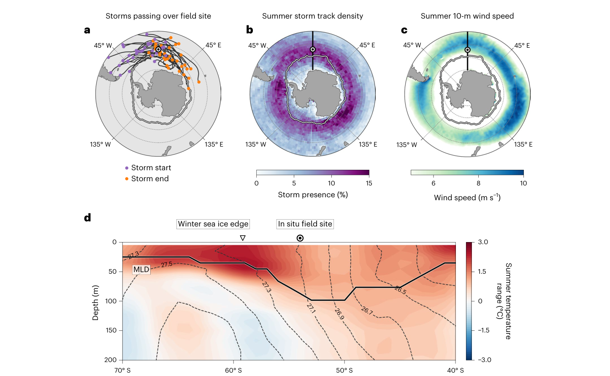
图 1 | SOSCEx-Storm 南大洋试验点的夏季风暴活动与温度变化。a，经过 SOSCEx-Storm 试验点 1,000 km 以内的各条风暴路径（黑白点位于 54° S、0° E）。风暴路径取自文献 27。白线为 NOAA 最优插值 SST V2 产品55给出的 2018 年 12 月平均海冰边缘。b，1981 至 2019 年夏季（12 月至 2 月）风暴路径密度气候态，以 1° × 1° 网格上的出现百分比表示。c，SOSCEx-Storm 试验期间的夏季平均 10 m 风速（m s−1）。d，黑实线表示沿 0 °E、利用全球海洋温度剖面集合（EN4；见方法）得到的 2019 年 2 月与 2018 年 12 月上层海洋温度变幅（°C）所在位置。叠加的灰色虚线等值线表示位势密度异常（σθ，kg m−3）。粗黑线表示 MLD。a–c 底图来自 Natural Earth（https://www.naturalearthdata.com）。
Fig. 1 | Summer storm activity and temperature change at the SOSCEx-Storm Southern Ocean field site. a, Individual storms tracks passing within 1,000 km of the SOSCEx-Storm field site (black and white dot at 54° S, 0° E). Storm tracks obtained from ref. 27. White line is the December-mean sea-ice edge for 2018 from the NOAA Optimum Interpolation SST V2 product55. b, Summer (December to February) climatology of storm track density from 1981 to 2019, showing presence in percentage terms on a 1° × 1° grid. c, Summer-mean 10-m wind speed (m s−1) for the duration of the SOSCEx-Storm field campaign. d, Black solid line indicates the location of the upper-ocean temperature range (°C) along 0 °E from February 2019 and December 2018 using a collection of ocean temperature profiles obtained across the global oceans (EN4; see Methods). Overlaid dashed grey contours represent potential density anomalies (σθ, kg m−3). The thick black line indicates the MLD. Basemaps in a–c from Natural Earth (https://www.naturalearthdata.com).
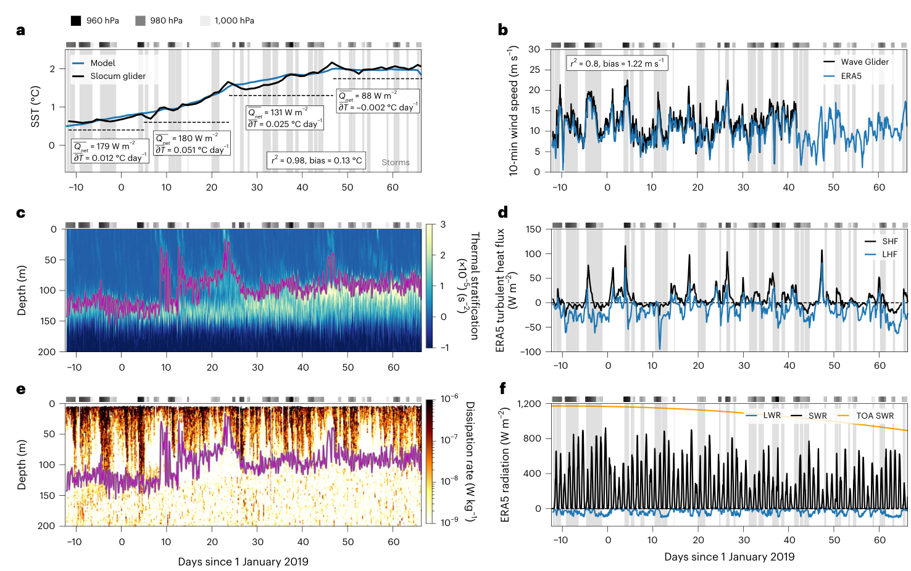
图 2 | 风暴驱动 mixed-layer 深度变率调节的夏季增温。a，水下滑翔机（黑线）与模式（蓝线）的夏季 SST 时间序列。上方灰色标记表示风暴出现及其最低海平面气压（hPa）。b，海面 Wave Glider 测量的风速（订正到海面上 10 m，黑线）和 ERA5 再分析 10 m 风速（蓝线）。c，滑翔机测量的 Brunt–Väisälä 频率热力分量（s−2），紫色为 MLD。d，ERA5 湍流热通量：感热通量（SHF，黑线）和潜热通量（LHF，蓝线），单位 W m−2，正值表示海洋得热。e，滑翔机耗散率（W kg−1），用作湍流混合强度量度，紫色为 MLD。f，ERA5 辐射通量：长波辐射（LWR，蓝线）、短波辐射（SWR，黑线）和大气顶入射短波辐射（TOA SWR，橙线），单位 W m−2。各图灰色阴影表示风暴时段。
Fig. 2 | Summer warming regulated by storm-driven mixed-layer depth variability. a, Time series of summer SST from the underwater glider (black line) and model (blue line). Grey markers above indicate storm presence with associated minimum sea-level pressure (in hPa). b, Wind speed measured from the surface Wave Glider (adjusted to 10 m above sea level, black line) and 10-m wind speed from the ERA5 reanalysis (blue line). c, Thermal-component of the Brunt–Väisälä frequency (s−2) measured from the glider, with the MLD in purple. d, ERA5 turbulent heat fluxes: sensible heat flux (SHF, black line) and latent heat flux (LHF, blue line) in W m−2, with positive values denoting ocean heat gain. e, Dissipation rate (W kg−1) from the glider plotted here as a measure of turbulent mixing intensity, with MLD in purple. f, ERA5 radiative fluxes: longwave radiation (LWR, blue line), shortwave radiation (SWR, black line) and the top-of-atmosphere incoming shortwave radiation (TOA SWR, orange line) in units of W m−2. Grey shaded regions in all panels indicate storm periods.
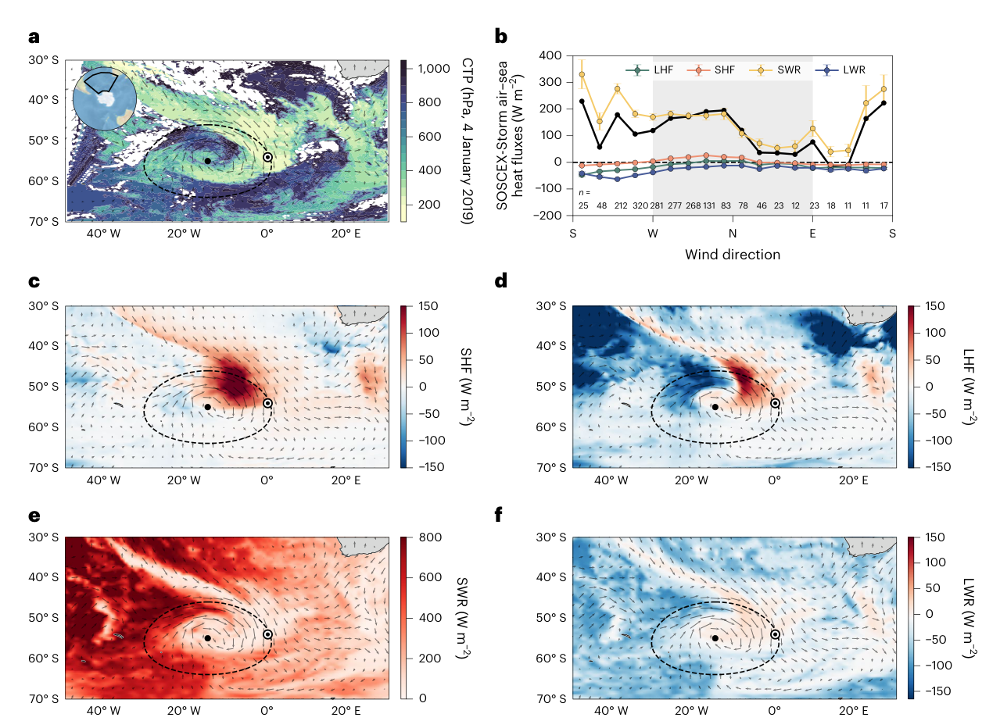
图 3 | SOSCEx-Storm 期间风暴对海气通量变率的影响。a，2019 年 1 月 4 日中分辨率成像光谱仪（MODIS）卫星 L2 云顶气压（CTP，hPa），显示一次大风暴的空间范围。插图给出各图所在区域。b，按风向分箱的海气热通量。点表示平均 LHF（绿）、SHF（橙）、SWR（金）和 LWR（蓝），误差棒为均值标准误。各风向箱的 n 值标于图底。黑线为净热通量。阴影区表示偏北风。c–f，与 CTP 观测同日 17:00 UTC、风暴过境现场机器人平台时 ERA5 热通量分量快照。ERA5 再分析的 SHF（c）、LHF（d）、SWR（e）和 LWR（f）。a,c–f 中黑箭头为 ERA5 10 m 风矢量，黑点为风暴中心，黑色虚线椭圆为风暴中心周围 1,000 km 半径。黑白点表示 SOSCEx-Storm 试验位置。正热通量表示海洋得热。a 与 c–f 底图来自 Natural Earth（https://www.naturalearthdata.com）。
Fig. 3 | Storm impacts on air–sea flux variability during SOSCEx-Storm. a, Cloud top pressure (CTP, in hPa) on 4 January 2019 from the Moderate Resolution Imaging Spectroradiometer (MODIS) satellite L2 data, showing the spatial extent of a large storm. Map inset shows region of the maps. b, Air–sea heat fluxes binned by wind direction. Dots show the mean LHF (green), SHF (orange), SWR (gold) and LWR (blue), with error bars indicating standard error of the mean. n values for each wind direction bin placed along the bottom of the panel. The black line is the net heat flux. The shaded region denotes northerly winds. c–f, Snapshot of the ERA5 heat flux components depicting a storm passing over the in situ robotic platforms on the same day as the CTP observations at 17:00 UTC. ERA5 reanalysis data for SHF (c), LHF (d), SWR (e) and LWR (f). Black arrows in a,c–f represent the ERA5 10-m wind vectors, with the black dot showing the storm centre and the black dashed ellipse a 1,000-km radius around the storm centre. The black and white dots shows the location of the SOSCEx-Storm field campaign. Positive heat fluxes denote ocean heat gain. Basemaps in a and c–f from Natural Earth (https://www.naturalearthdata.com).
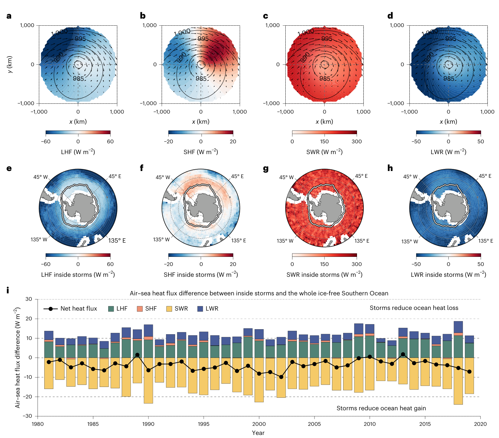
图 4 | 南大洋夏季风暴合成热通量。a–d，基于 ERA5 再分析、1981 至 2019 年全部夏季月份的风暴合成平均 LHF（a）、SHF（b）、SWR（c）和 LWR（d）。叠加黑等值线为平均海平面气压（MSLP，hPa），黑箭头为 10 m 风矢量。e–h，1981 至 2019 年风暴内夏季平均海气热通量：LHF（e）、SHF（f）、SWR（g）和 LWR（h）。i，堆积柱表示仅风暴内与整个无冰南大洋平均之间夏季平均海气热通量分量之差（LHF（绿）、SHF（橙）、SWR（金）、LWR（蓝））。单位为 W m−2。带标记的黑色虚线表示净热通量差，即全部分量之和。e–h 底图来自 Natural Earth（https://www.naturalearthdata.com）。
Fig. 4 | Summer storm-composited heat fluxes across the Southern Ocean. a–d, Storm composite mean of LHF (a), SHF (b), SWR (c) and LWR (d) during all summer months between 1981 and 2019 based on ERA5 reanalysis. Overlaid black contours show the mean sea-level pressure (MSLP) in hPa, and black arrows indicate 10-m wind vectors. e–h, Summer-mean air–sea heat flux within storms between 1981 and 2019 for LHF (e), SHF (f), SWR (g) and LWR (h). i, Stacked bars show the difference of the summer-mean air–sea heat flux components (LHF (green), SHF (orange), SWR (gold), LWR (blue)) from within storms only and the whole ice-free Southern Ocean average. Units are in W m−2. The black dashed line with markers indicates the net heat flux difference, representing the sum of all components. Basemaps in e–h from Natural Earth (https://www.naturalearthdata.com).
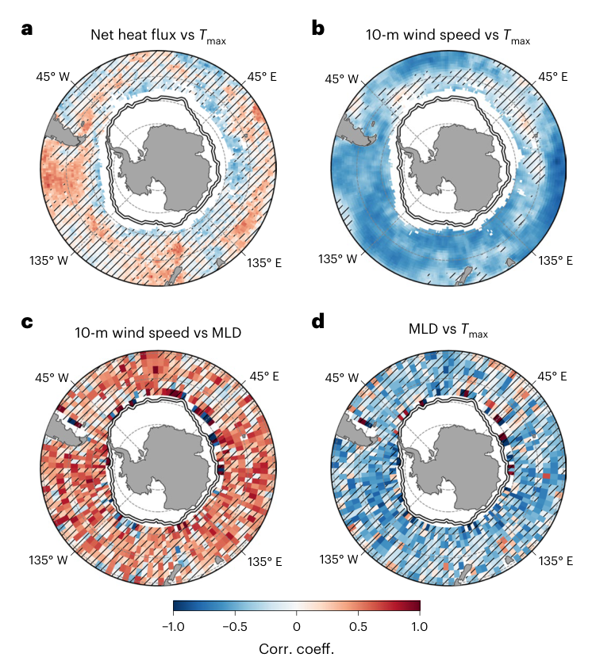
图 5 | 夏季风速、MLD 与 Tmax 的年际协同变率。a–d，空间相关图，显示 2004–2019 年夏季平均量之间的年际关系：净热通量与最高 SST（Tmax）（a）；10 m 风速与 Tmax（b）；10 m 风速与 MLD（c）；MLD 与 Tmax（d）。填色为相关系数（Corr. coeff.），点绘表示相关在 90% 置信水平不显著的区域（P > 0.1，n = 16）。底图来自 Natural Earth（https://www.naturalearthdata.com）。
Fig. 5 | Interannual co-variability between the summer wind speed, MLD and Tmax. a–d, Spatial correlation maps showing the interannual relationships (2004–2019) of the summer-mean: net heat flux and maximum SST (Tmax) (a); 10-m wind speed and Tmax (b); 10-m wind speed and MLD (c) and MLD and Tmax (d). Shading indicates the correlation coefficient (Corr. coeff.), whereas stippling denotes areas where the correlation is not statistically significant at the 90% confidence level (P > 0.1, n = 16). Basemaps from Natural Earth (https://www.naturalearthdata.com).
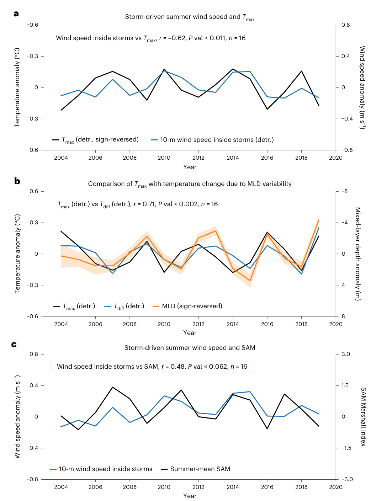
图 6 | 南大洋风暴特征与 SAM 的年际协同变率。a，2004–2019 年无冰南大洋（40° S 以南）风暴内 10 m 平均风速去趋势年际夏季异常（蓝线）与去趋势夏季最高 SST（符号反转异常，Tmax，黑线），呈强相关（r = −0.62，P < 0.011，n = 16）。b，去趋势 Tmax（黑线）与 mixed-layer 深度变率相关温度变化（Tdiff；蓝线）的比较，并给出去趋势 mixed-layer 深度异常（橙，符号反转阴影为均值的 ± 1 标准误），表明更浅的夏季 mixed layer 与更强的海表增温同时出现（r = 0.71，P < 0.002，n = 16）。a 和 b 中的 detr. 表示各变量的去趋势信号。c，风暴驱动的夏季 10 m 风速异常与 SAM Marshall 指数的比较，说明风暴风速强度与半球环流的协同变率（r = 0.48，P < 0.062，n = 16）。
Fig. 6 | Interannual co-variability between Southern Ocean storm characteristics and SAM. a, Detrended interannual summertime anomalies of the 10-m mean wind speed inside storms (blue line) and the detrended maximum summer SST (sign-reversed anomaly, Tmax, black line) across the ice-free Southern Ocean (south of 40° S) over 2004–2019, showing a strong correlation (r = −0.62, P < 0.011, n = 16). b, Comparison between detrended Tmax (black line) and the temperature change associated with mixed-layer depth variability (Tdiff; blue line), together with the detrended mixed-layer depth anomaly (orange, sign-reversed shading shows ± 1 standard error of the mean), indicating that shallower summer mixed layers coincide with enhanced surface warming (r = 0.71, P < 0.002, n = 16). The term detr. in a and b refers to the detrended signal for each respective variable. c, Comparison of storm-driven summer 10-m wind-speed anomalies and the SAM Marshall Index, illustrating co-variability between storm wind-speed intensity and the hemispheric circulation (r = 0.48, P < 0.062, n = 16).
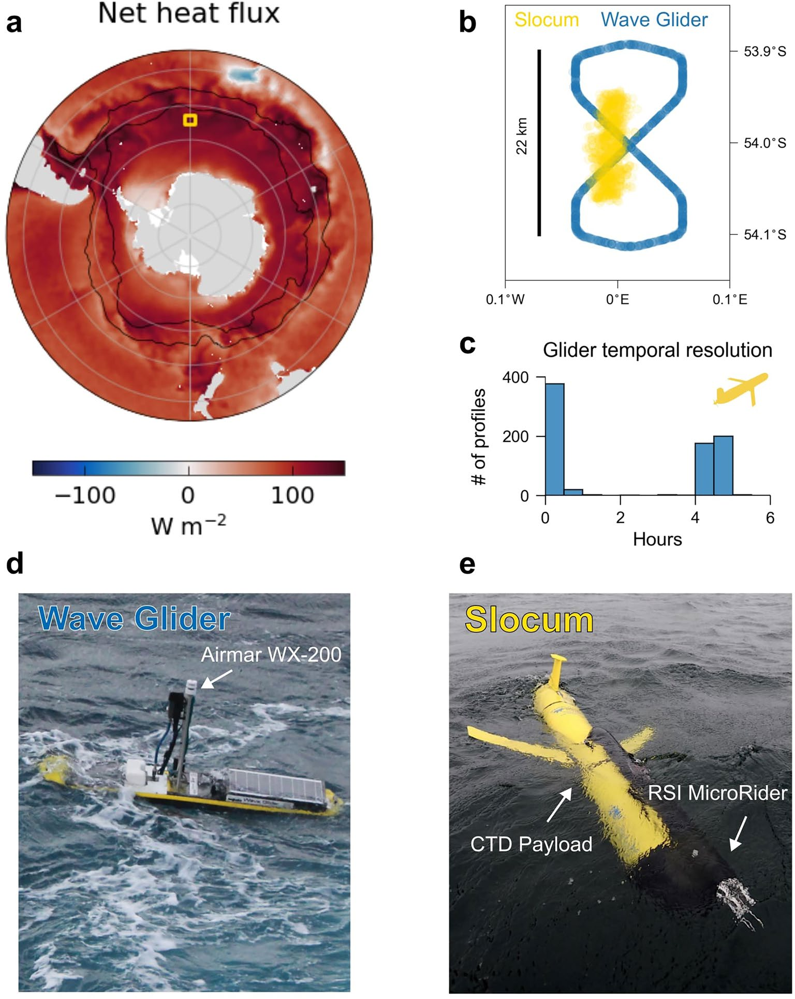
扩展数据图 1 | SOSCEx-Storm 野外试验与机器人平台。a，SOSCEx-Storm 期间（2018 年 12 月至 2019 年 2 月）ERA5 再分析平均净海气热通量。黄色方框为机器人现场投放位置。b，水下 Slocum 滑翔机（黄）与海面 Wave Glider（蓝）轨迹。c，水下 Slocum 滑翔机上浮时间间隔直方图，表示海表温度的时间分辨率。d，海面 Wave Glider 和 e，SOSCEx-Storm 试验所用的水下 Slocum 滑翔机照片。a 底图来自 Natural Earth（https://www.naturalearthdata.com）。照片由 Sarah Nicholson 博士提供。
Extended Data Fig. 1 | SOSCEx-Storm field campaign and robotic platforms. a, The mean net air-sea heat flux for the period of SOSCEx-Storm (December 2018 to February 2019) using ERA5 reanalysis. The location of the robotic field deployments is shown as the yellow box. b, Tracks of the underwater Slocum glider (yellow) and surface Wave Glider (blue). c, Histogram of the time between underwater Slocum glider surfacing, indicating the temporal resolution of the sea surface temperature. Images of the d, surface Wave Glider and e, underwater Slocum glider used during the SOSCEx-Storm field campaign. Basemap in a from Natural Earth (https://www.naturalearthdata.com). Photographs courtesy of Dr. Sarah Nicholson.
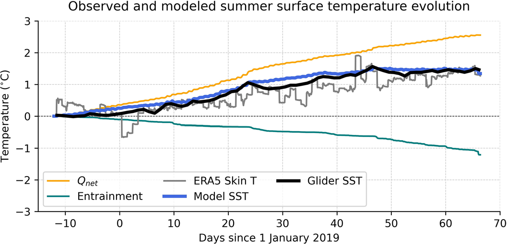
扩展数据图 2 | 观测夏季海表温度演变的模式贡献。海表温度（SST）的逐日演变相对机器人平台投放时的值给出。模式 SST（蓝线）表示由累积净热通量（Qnet，橙线）和夹卷（青绿线）得到的净温度变化。并与独立滑翔机 SST 观测（黑线）及同位 ERA5 表皮温度（灰线）比较。
Extended Data Fig. 2 | Modeled contributions to observed summer sea surface temperature evolution. The daily evolution of sea surface temperature (SST) is shown relative to its value on deployment of the robotic platforms. The modeled SST (blue line) represents the net temperature change derived from cumulative net heat flux (Qnet, orange line) and entrainment (teal line). These are compared with independent glider SST observations (black line) and co located ERA5 skin temperature (grey line).
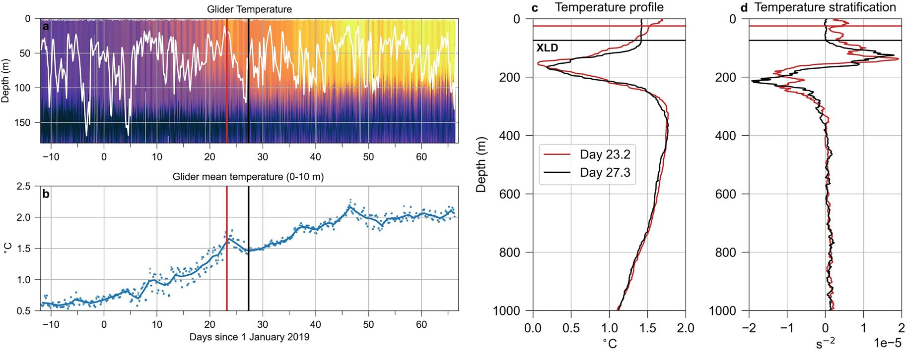
扩展数据图 3 | 风暴驱动夹卷造成强 SST 降温。a，水下滑翔机给出的上层海洋温度夏季演变（填色，°C），混合层深度（XLD，白线）由 Slocum 上 MicroRider 测量定义。红线和黑线表示 c 和 d 中比较的两条剖面的时间。b，水下滑翔机观测的 SST 时间序列（线为日平均）。水下滑翔机在 2019 年 1 月 24 日遭遇风暴之前（红，第 23.2 天）和之后（黑，第 27.3 天）的 c 温度和 d Brunt-Väisälä 频率热力分量垂直剖面。相应水平线表示各剖面的 XLD 深度。
Extended Data Fig. 3 | Storm-driven entrainment drives strong SST cooling. a, Summer evolution of the upper ocean temperature (color, °C) from the underwater glider, with the mixing layer depth (XLD, white line) defined from the MicroRider measurements on the Slocum. The red and black lines show the times of the two profiles compared in c and d. b, Time series of the sea surface temperature (SST) from the underwater glider observations (line shows the daily-mean). Vertical profiles of c, temperature, and d, thermal component of the Brunt-Väisälä frequency from the underwater glider before (red, day 23.2) and after (black, day 27.3) the storm encountered on 24 January 2019. The respective horizontal lines depict the depth of the XLD for each given profile.
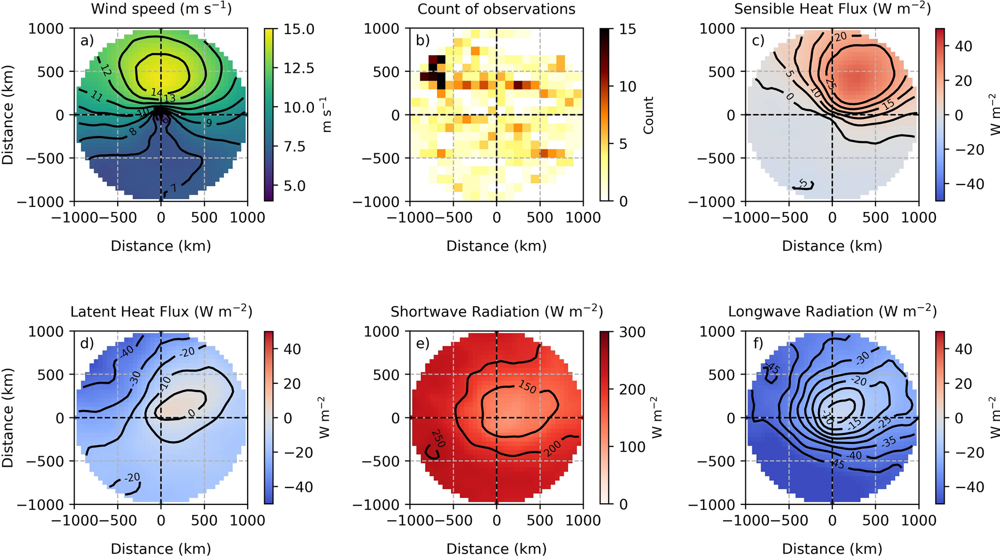
扩展数据图 4 | 与 SOSCEx-Storm 野外试验重叠的风暴内夏季平均 ERA5 风速和海气热通量分量。a，SOSCEx-Storm 期间距机器人观测 1000 km 以内全部风暴的平均风速（m s−1）；b，相对风暴位置的水下滑翔机观测计数。c-f，全部风暴的感热通量、潜热通量、短波辐射和长波辐射平均值，单位分别为 W m−2。等值线在 a 中表示平均风速，在 c 至 f 中表示相应平均热通量。
Extended Data Fig. 4 | Summer-mean ERA5 wind speed and air-sea heat flux components within storms overlapping with the SOSCEx-Storm field campaign. a, Mean wind speed (m s−1) for all storms during SOSCEx-Storm within 1000 km of the robotic observations, and b, count of underwater glider observations relative to the storm position. c-f, mean of the sensible heat flux, latent heat flux, shortwave radiation, and longwave radiation for all storms in W m−2, respectively. Contour lines represent the mean wind speed in a, and the respective mean heat flux values in c through f.
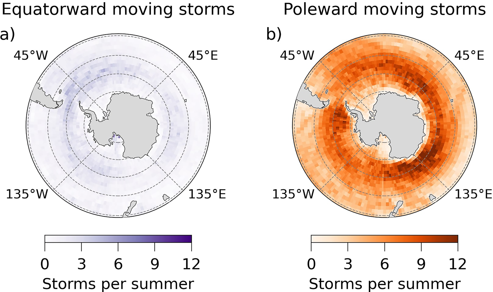
扩展数据图 5 | 1981 至 2019 年南大洋向赤道和向极风暴轨迹分布图。a，每个夏季向赤道移动风暴的平均数。b，每个夏季向极移动风暴的平均数。风暴路径位置取自文献 2。底图来自 Natural Earth（https://www.naturalearthdata.com）。
Extended Data Fig. 5 | Distribution maps of equatorward and poleward Southern Ocean storm trajectories between 1981 and 2019. a, Average number of equatorward-moving storms per summer. b, Average number of poleward-moving storms per summer. Storm track positions were obtained from ref. 2. Basemaps from Natural Earth (https://www.naturalearthdata.com).
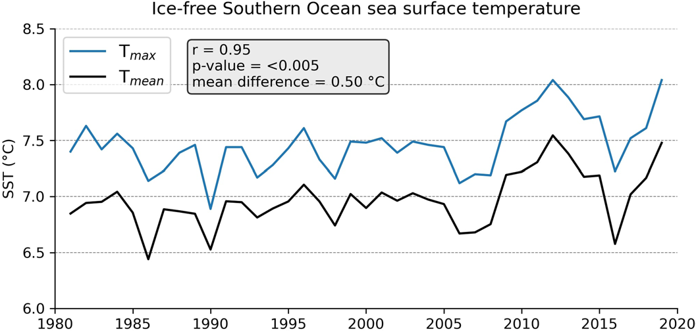
扩展数据图 6 | 无冰南大洋夏季最高和平均海表温度变率。1981 至 2019 年无冰南大洋夏季最高 SST（Tmax，蓝）和夏季平均 SST（Tmean，黑）中位数时间序列。Tmax 与 Tmean 的相关（r=0.95）表明二者之间存在强且显著（p < 0.005，n=39）的一致性。
Extended Data Fig. 6 | Ice-free Southern Ocean summer maximum and mean sea surface temperature variability. Time series of the median value of the ice-free Southern Ocean summer maximum (Tmax, blue) and summer mean (Tmean, black) sea surface temperature from 1981 to 2019. The correlation (r=0.95) between Tmax and Tmean indicates a strong significant (p < 0.005, n=39) coherence between the two.
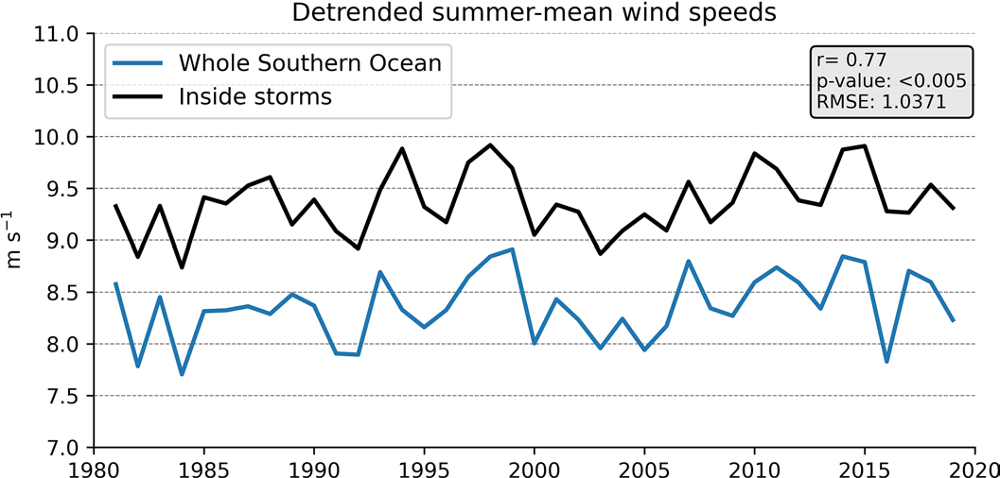
扩展数据图 7 | 风暴内去趋势夏季平均风速与整个无冰南大洋的比较。1981 至 2019 年风暴内（黑线）和整个无冰南大洋（蓝线）夏季平均去趋势风速（m s−1）的年际变率。两条时间序列均显示强且显著（p < 0.005，n=39）的一致性，相关系数 r=0.77。
Extended Data Fig. 7 | Summer-mean of the detrended wind speed inside storms vs. the whole ice-free Southern Ocean. Interannual variability of the summer-mean detrended wind speed (m s−1) inside storms (black line) and over the whole ice-free Southern Ocean (blue line) for the period 1981 to 2019. Both time series show strong significant (p < 0.005, n=39) coherence, with a correlation coefficient of r=0.77.
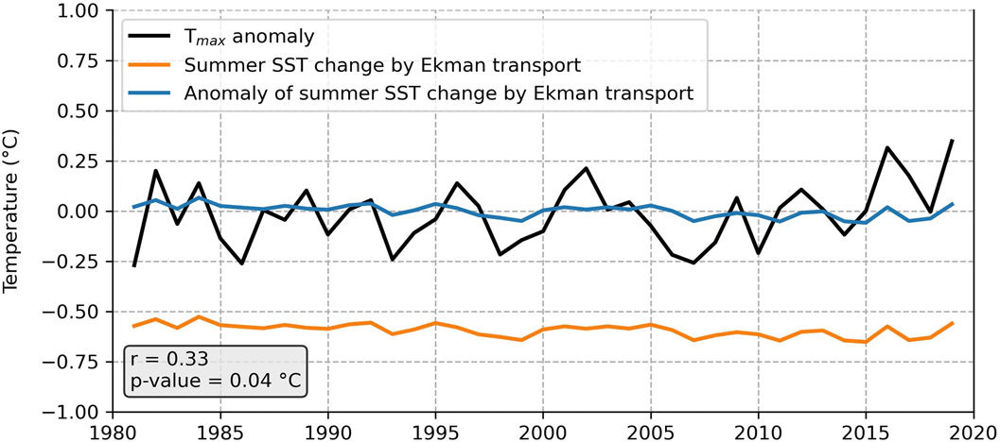
扩展数据图 8 | 1981 至 2019 年夏季 SST 异常与 Ekman 驱动温度变化的比较。南大洋夏季最高海表温度异常（Tmax，黑线）以及南大洋平均 Ekman 驱动夏季 SST 变化（橙线，异常以蓝线给出）的时间序列。所有量的单位均为 °C。
Extended Data Fig. 8 | Comparison between summer SST anomalies and Ekman-driven temperature changes from 1981 to 2019. Time series of the Southern Ocean summer maximum sea surface temperature anomaly (Tmax, black line), and the Southern Ocean-mean Ekman-driven summer SST change (orange line, anomaly shown as the blue line). All quantities are expressed in °C.
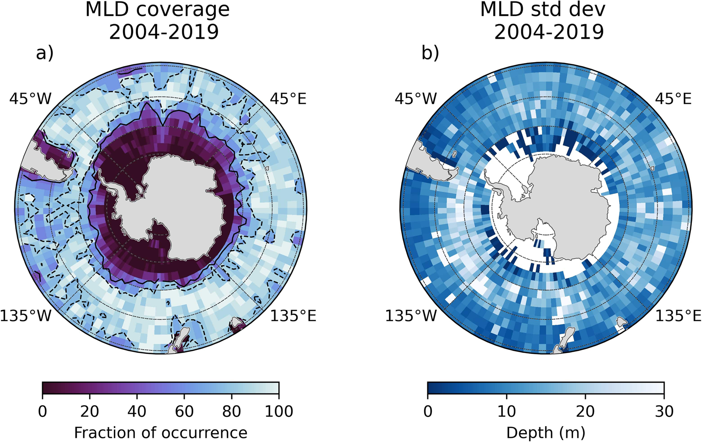
扩展数据图 9 | 2004 至 2019 年南大洋 mixed layer 深度的覆盖率和标准差。a，16 年内观测到夏季平均 mixed layer 深度（MLD）的出现比例（百分比）。黑等值线表示 50%（实线）和 80%（虚线）MLD 覆盖。b，16 年夏季平均 MLD 的标准差，表示 MLD 变率。底图来自 Natural Earth（https://www.naturalearthdata.com）。
Extended Data Fig. 9 | Coverage and standard deviation of the Southern Ocean mixed layer depth between 2004 and 2019. a, The fraction occurrence (in percent) that a summer-mean mixed layer depth (MLD) was observed within the 16 years. Black contours indicate 50% (solid line) and 80% (dashed line) MLD coverage. b, Standard deviation of the summer-mean MLD over the 16 years, indicating the variability in MLD. Basemaps from Natural Earth (https://www.naturalearthdata.com).